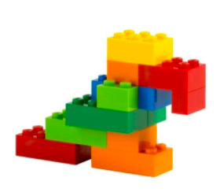
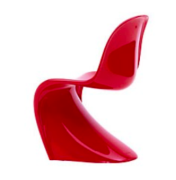

Clear Rx Pill Bottle
Solve at human scale; The little things are the big things
Topic 1: Human Factors
Topic 5: Innovation
Topic 7: User-centered Design

LEGO
LEGO
Leveraging production methods to achieve high quality
Topic 2: Resource Management and Sustainability
Topic 4: Materials and Processes
Topic 10: Commercial Production

Patagonia: Worn Wear
A sustainable philosophy drives innovation and business success
Topic 2: Resource Management and Sustainability
Topic 8: Sustainability
Topic 9: Markets and Innovation
Topic 4: Materials and Processes

Panton Chair
Panton Chair
Classic design based on material innovation